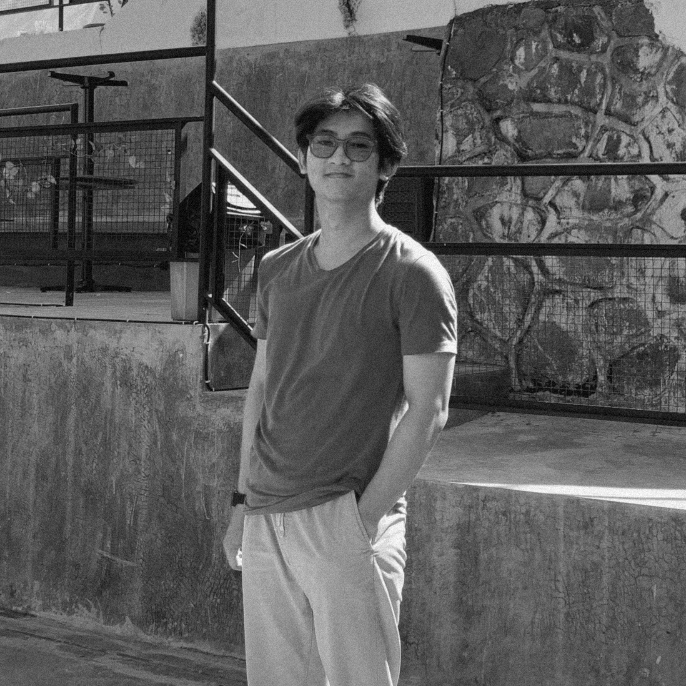

Mohammad Irbah Miftakhul Huda
Semarang, Central Java, 50261
Whatsapp: +6289690411133
Email:
mohammadirbah@gmail.com
Linkedin:
www.linkedin.com/in/mohammadirbah
Github:
www.github.com/mohammadirbah
Portfolio:
www.mohammadirbah.vercel.app

Hello, I am a Bachelor of Information Engineering who has an understanding of software development, hardware, and
information technology. I'm a website design enthusiast, with expertise in HTML, CSS, Bootstrap, Vue.js,
React.js, React-Bootstrap, and Material UI. I believe that good design is the key to great user experience, and
I am dedicated to creating aesthetically pleasing and functional interfaces. With the experience I have, I have
honed my skills in building responsive and engaging websites. I am always looking for new challenges to develop
my skills and contribute to a dynamic team.
Work Experience
Bootcamp at Gamelab Indonesia | Educa Studio. Salatiga, Central Java | Jun 2024 - Jun 2024
Participated in a bootcamp as a Front-End Web Developer at Gamelab.id located in Salatiga.
I did activities and learned several things, which are:
- Learn basic website programming using HTML and CSS.
- Learn to use Bootstrap Framework and SASS.
- Learn to use the Vue.js Framework.
- Learn to use the React.js Framework.
Internship at Regional Indonesian Broadcasting Commission (KPID) of Central Java Province | Mar 2022 - Apr 2022
Television Broadcast Monitoring Section
- Analyze broadcast content to ensure compliance with the broadcasting code of ethics and existing norms.
- Monitoring and evaluating television broadcast programs from various stations by KPID's broadcast
regulations and guidelines.
Internship at CV. Karoseri Laksana | May 2017 - Oct 2017
Performed activities in various divisions within CV Karoseri Laksana.
Some of the activities that I did were:
- Sticker design division
- Jog frame/foam printing division
- Material & spare parts warehouse division
- Body frame & chassis welding division
- Plate cutting division
- Interior electronic component installation division
- Fiberglass component manufacturing division
- Puttying & painting division
- Finishing Division
Education
Stikubank University Semarang | Sep 2019 - Oct 2023
Bachelor of Informatics Engineering - GPA 3.51
- Creating an expert system application to diagnose diseases in web-based ferrets with an accuracy rate of
80.0%.
SMK Negeri 7 Semarang | June 2014 - May 2018
Light Vehicle Engineering Department - Average Score 86
- Make an engine stand using a car engine that includes electricity, cooling (air conditioning), and oil
pressure.
Organization Experience
HIPMI PT UNISBANK | Oct 2019 - Dec 2021
I learned to work with the team through my involvement in UKM HIPMI PT Unisbank Semarang. My achievements while
in
UKM, I managed to carry out activities in the form of "Creative Business in Digital Marketing", "Coaching
Digital Marketing for
Millennial", "Branding Strategy in Advancing MSMEs", and so on which involved many participants and speakers.
participants and resource persons. I specialized in the decoration and documentation division while studying in
the organization. I
I learned to make flyer designs, mmt designs, twibbon, photography, become a seminar operator, and others.
During my study
in the organization I used tools such as OBSstudio, photoshop, and Canva software.
Certification
- Bootstrap and SASS | Jun 2024
Sertificate by Gamelab Indonesia | Educa Studio
- Vue.js | Jun 2024
Sertificate by Gamelab Indonesia | Educa Studio
- React.js | Jun 2024
Sertificate by Gamelab Indonesia | Educa Studio
- TOEFL Skor: 417 | Mar 2023
Sertificate by British Council English Score
- PCAP: Programming Essentialsin Python | Mar 2023
Sertificateby Cisco Networking Academy
- Introduction to IoT | Agu 2022
Sertificateby Cisco Networking Academy
Skills & Competencies
- Understanding MySQL
- Understand HTML and CSS
- Understanding Bootstrap and SASS
- Understanding Vue.js
- Understand React.js
- Understand Java Programming Language
- Understand JavaScript Programming Language
- Operate IntelliJ
- Operate Sublime Text
- Operate VSCode
- Operate Microsoft Office
- Detail oriented
- Able to work individually and in teams
- Communication skills
- Time management skills
- Problem solving skills